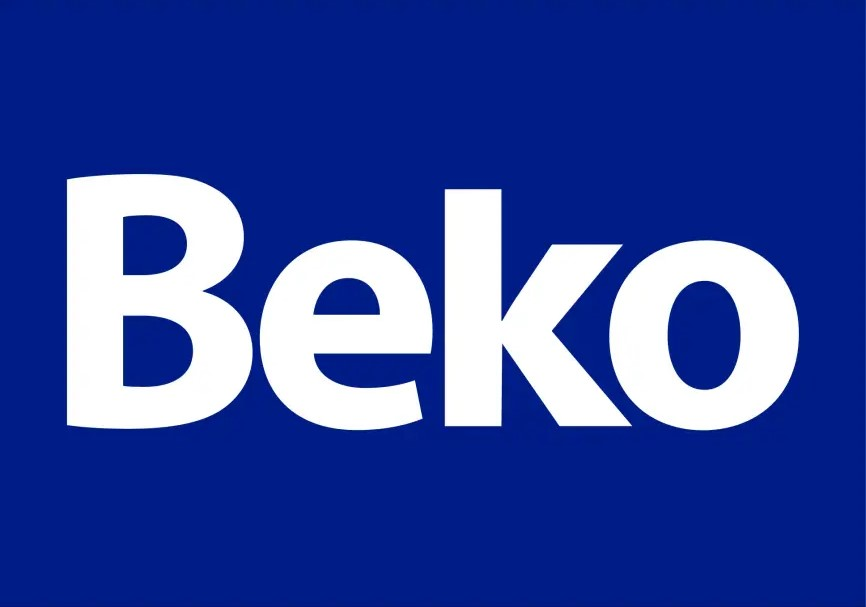
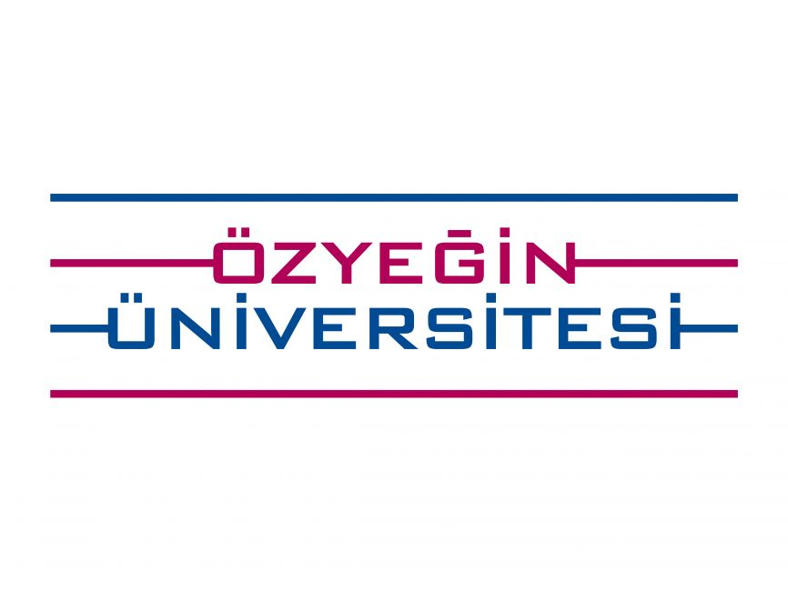

Hi All!
Seyit Kubilay Ulucay
Electrical & Electronics Engineer Trying not to short-circuit my career goals.
View My CVAbout Me
Hello, I'm Kubilay. I'm an Electrical and Electronics Engineering student at Özyeğin University with a deep passion for bringing technology to life. My studies and projects are driven by a fascination with the intersection of hardware and software—from designing custom PCBs and control systems to programming the logic that makes them work.
My hands-on experience has solidified my desire to solve real-world engineering challenges. I'm currently seeking a full-time R&D role or a Master's program where I can apply my skills in power electronics, embedded systems, and robotics, and contribute to building innovative new technologies.
Projects
Senior Year Project: Battery Health & Performance Management System
Designed and simulated a comprehensive Battery Management System (BMS) for Li-ion batteries, featuring a custom PCB, an STM32-based control unit, and a novel active cell balancing algorithm validated in MATLAB/Simulink.
BMS STM32 PCB Design Active Balancing MATLAB/Simulink KiCadRemote-Controlled Axial Flux Motor
Designed, built, and tested a custom electric axial flux motor with hand-wired coils and NRF24 remote control.
Arduino3D PrintingCustom PCBWind Turbine Grid Integration
Analyzed impact and cost-effectiveness of wiring configurations for wind turbine grid integration using PowerWorld Simulator.
PowerWorldAnalysisPLC Automation Systems
Developed automation logic for a simulated traffic light system and a functional toy claw machine using Schneider EcoStruxure.
PLCAutomationServo Actuated 3-Axis Gimbal
Co-designed and built a 3-axis gimbal using Arduino, MPU6050 IMU, servo motors, and 3D printing for stabilization.
ArduinoIMU3D PrintingSensorsML: Bitcoin Market Analysis
Investigated correlation between Twitter volume and Bitcoin fluctuations using BART model, Python, and Pandas.
PythonMachine LearningPandasZumo Robot Object Detection
Developed algorithm for Zumo robot navigation, obstacle detection (IR/Reflectance), and counting.
Arduino C++RoboticsSensorsDeforestation Analysis
Researched causes, consequences, and solutions for deforestation in Turkey's Black Sea region, proposing an "Industrial Forest Project".
Research Analysis Sustainability
Experience

Intern, R&D Advanced Sensor Technologies
BEKO R&D
July 2024 – Aug 2024 | Istanbul, TURKEY
- Contributed to developing a gap/floor detection system for robot vacuums using STM ToF sensors.
- Implemented sensor-based power management for optimized cleaning and obstacle avoidance.
- Gained hands-on experience with sensor integration, data analysis, and R&D processes.

Undergraduate Assistant
Özyeğin University, Faculty of Engineering
Mar 2023 – June 2023 | Istanbul, TURKEY
- Provided hardware support for Autonomous Driving course (NVIDIA Jetson Nano vehicles).
- Assisted teams with hardware assembly and troubleshooting.
Part-timer, Student Services
Özyeğin University
June 2023 – Sep 2023 | Istanbul, TURKEY
- Assisted students with administrative inquiries (transfers, applications, enrollment).
- Developed Power Automate workflow for course assignments, reducing processing time by ~50%.
Skills
Languages
- Turkish (Native)
- English (Fluent)
- German (Beginner)
Programming
- Python
- Java
- C / C++
- MATLAB
- Arduino C/C++
Software & Tools
- LTSpice
- MATLAB/Simulink
- PowerWorld
- KiCad
- MS Office Suite
- Power Automate
- Schneider EcoStruxure
- NI LabVIEW
Hardware
- STM ToF Sensors
- STM32 Boards
- NVIDIA Jetson Nano
- Arduino
- Raspberry Pi
- Lab Equipment
- Soldering
Areas of Interest
Get In Touch
Feel free to reach out! You can find me here: